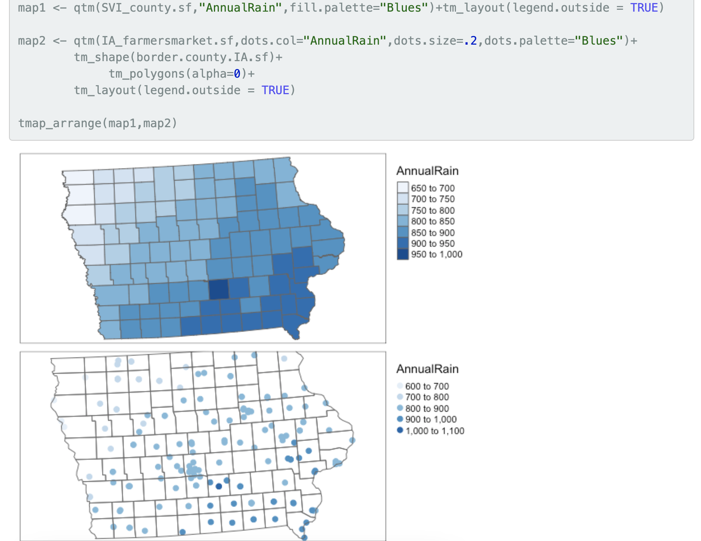
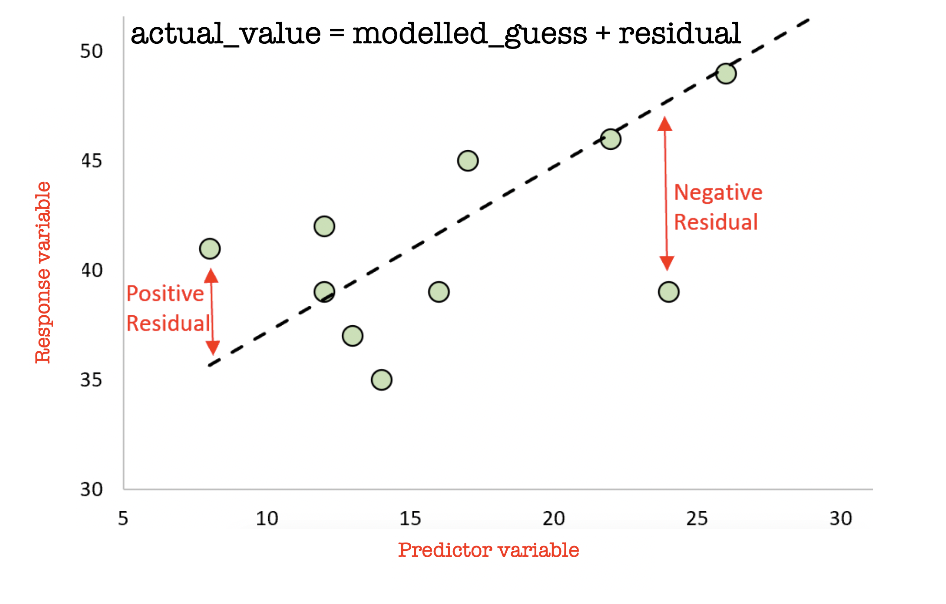
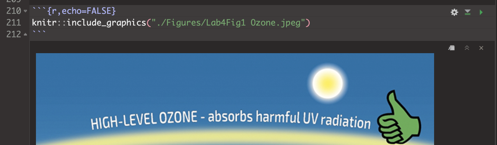
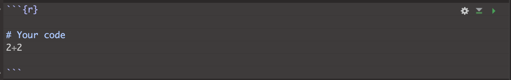
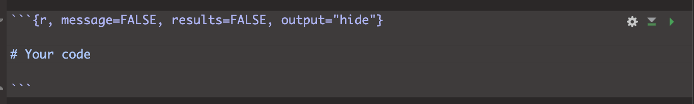
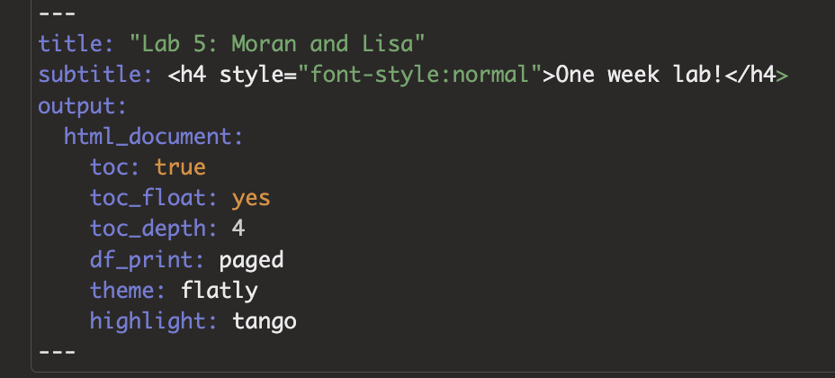

Welcome to the final part of your projects. The aim of this week is to tidy your reports (following the guidelines below), do one final analysis and finish up. This is due WEDNESDAY of exams week (see Canvas).
You might find that if you have updated R, it can’t find a few packages such as sp. Remove these lines from your library code chunk - it should then run. If we get errors, Harman and I will help you through them. The reason for this is the big R update.
Especially an issue on the cloud. Follow these steps.
Go to the Files tab or to your folder on your computer. Your
folder should have your .RProj file, your .RmD report, your data, and
any photos/pictures, but no random sub-files. Delete any cache files,
the html file, .md files or random subfolders.
In RStudio in the the Environment tab, click the broom AND/OR
type this into the console rm(list=ls()). This will clear your
variables.
The next step depends on what you are trying to do
If you’re trying to knit:
Go go to the Session menu at the very top of the
screen.
Click Restart R and Clear output.
Wait for it to finish running. Then press knit.
If it still doesn’t work, talk to a teacher/TA
If you’re trying to write/run code,:
Go to the session menu at the very top.
Click Restart R and run all code chunks.
Wait for it to run, then continue. If it gets stuck on a code
chunk, carefully read/respond to that error.
First, let’s clear your workspace & headspace
rm(list=ls())This should clear your workspace and run everything in your project.
Click knit. If this knitted before, it should knit now! If it doesn’t
knit, then run all the code chunks and see where the error is. Often
it’s because you imported some data without actually writing the command
in your code.
Click “Run All” code chunks.
Make sure you have followed step 1.1 and run your code. Now go to your environment tab.
Find the variable containing your sf data (e.g. your spatial
point data). Ideally choose the utm one, but either this or the sf
long/lat one is OK. e.g. market.sf.utm
In your Environment Tab, click on the text of the NAME ITSELF of your data in the environment tab (not the little arrow) to open the data in a new tab. OR in the CONSOLE, type View(XXXX) where XXXX is your variable name.
Look at your data. You should have at least one of these scenarios:
What do I mean?
A column of numbers with actual meaning for each point. E.g.
Elevation, Age, Length, Percentage in Poverty, average temperature…
DO NOT COUNT THESE TYPES OF COLUMNS
If you have more than 1 numeric column in a point or polygon dataset, go straight to Step 2.
For now, send Dr G a Canvas message,
OR try adding the average weather conditions (Follow the actual tutorial in this link e.g. scroll down and use my code, don’t click on the outside tutorial links https://psu-spatial.github.io/Geog364-2021/364Data_TutorialDownload.html#Weather_data)
OR if you are on land and you don’t have elevation, add that.
Create a new Heading at the end of your report called Regression.
Choose two numeric columns/marks/variables that you think might be related in your dataset. E.g. Percentage BroadbandAccess and Poverty Level. Make a note of the exact spelling of the column names.
Ideally these will be linked somehow to the aim of your report, but if you end up looking at ‘nonsense variables’ like the elevation vs UFO “length of sighting” that’s OK, you won’t lose marks.
We want to assess whether one mark ‘causes’ the other one. E.g. “I think percent_poverty ‘causes’ lower percent_broadband_access for zip codes in Florida”, or “I think Elevation causes changes in Sighting_Length for point-based UFO sightings”.
So in your report text, assign one variable/column to be your “predictor” e.g. in this case, I would choose percent_poverty, or Elevation
And assign the other one as your “response” e.g. my report might be about percent_broadband_access access, or Sighting_Length.
Now see if you can come up with some story about WHY one might cause the other.
For example - “higher elevations mean clearer skies and longer UFO sightings”. Or “poorer neighbourhoods are less likely to have infrastructure spending and so less likely to have good internet speeds”. Write both your choices and the story you think links them into your report. Below, we will explore these variables.
Make good looking histograms of EACH of your response and predictor variables. I suggest either the ggplot version or the gghistostats version at the end of this tutorial.
https://psu-spatial.github.io/Geog364-2023/in_Tutorial08Plots.html#Histograms
In your report, describe the distribution of each of your variables e.g. describe the shape of the histograms. You ideally want this to look roughly like a normal distribution. It’s OK if it’s super-skewed1, but don’t have things that are super weird (e.g. all 1s and 0s or all the same number).
We are going to use the ggplotly package. Follow THIS TUTORIAL to make a scatterplot comparing your two variables. https://psu-spatial.github.io/Geog364-2023/in_Tutorial08Plots.html#Interactive. Remember:
You will need library(plotly)
Your response is the y variable (vertical axis)
Your predictor is the x variable (horizontal axis)
Make a good looking QTM/tmap map of each of your variables. Here’s example code for both options (you will have one type or the other).
If you have point data, the option dots.col=“COLNAME”, allows you to color in the points to show your variable.
If you have polygon data, the option col=“COLNAME” allows you to color in each polygon to show your variables.

In the text, describe the relationship two maps within the context of your report/topic. e.g. does it look like both your response and predictor are higher in the North? By some major cities? Do they “go together” e.g. areas where one is high the other is high?. Any differences across your map?
Now update your story/prediction about the relationship between the two variables. E.g. from this exploratory analysis I NOW believe that….
Now we will formally look at the relationship between the two variables. Go to your library code chunk at the top and add/run. You might need to install them.
library(ggplot2)library(hrbrthemes)Go back to the end of your code. To make a nice scatterplot, use this code but update the TABLENAME to the variable name of your sf data (e.g. market.sf), and RESPONSE / PREDICTOR to the column names of your response and predictor columns.
# Move these to your library code chunk at the top.
ggplot(TABLENAME, aes(x=PREDICTOR, y=RESPONSE)) +
geom_point() +
theme_ipsum()Does the relationship between your predictor and your response match your story/prediction? Any odd outliers? Is the relationship roughly linear? Or does it look more like the datasaurus we talked about in the regression data. For ideas on wording, see here: https://www.khanacademy.org/math/ap-statistics/bivariate-data-ap/scatterplots-correlation/a/describing-scatterplots-form-direction-strength-outliers
We will now fit a linear regression model to the data. Use this code, but update the TABLENAME to the variable name of your sf data (e.g. market.sf), and RESPONSE / PREDICTOR to the column names of your response and predictor columns.
LinearFit <- lm(RESPONSE ~ PREDICTOR, data = TABLENAME, na.action="na.exclude")
TABLENAME$ModelledOutput <- predict(LinearFit)
TABLENAME$Linear.Residuals <- residuals(LinearFit)
# with linear trend
ggplot(TABLENAME, aes(x=PREDICTOR, y=RESPONSE)) +
geom_point() +
geom_smooth(method=lm , color="red", se=FALSE) +
theme_ipsum()Given your visual inspection, write whether you you happy with your linear model. For example, does it seem to do a good job of capturing the relationship between your variables?2
We can have a look at the line of best fit by simply typing/running
the linear fit name. summary(LinearFit) gives a load more
statistics. This will give you the intercept and the gradient.
Use these notes to write out the equation for the line of best fit in your report.
https://online.stat.psu.edu/stat200/lesson/12/12.3#paragraph--2822
You can either do this manually, or use insert Equation. (hint, the little hat means estimated/modelled weight).
Finally, we can look at maps of the ACTUAL response, the MODELLED response (line of best fit), and the “residuals”. Remind yourself on what is going on here: https://www.khanacademy.org/math/ap-statistics/bivariate-data-ap/xfb5d8e68:residuals/v/residual-plots and in the plot below.
A positive residual means that the actual value was HIGHER than predicted. A negative residual means the actual value was LOWER than predicted.

The maps below will only work if you used the sf version of your data in the regression code, not the raw data (e.g. use the .sf or .utm one). Again change TABLENAME and RESPONSE to match your data:
# your actual response variable observations
qtm(TABLENAME,dots.col = "RESPONSE" , fill.palette="Blues") +
tm_layout(legend.outside = TRUE)
# the value of your model at each location e.g. what does the line of best fit suggest
qtm(TABLENAME,dots.cot = "ModelledOutput",fill.palette="Blues") +
tm_layout(legend.outside = TRUE)
# the residuals
qtm(TABLENAME,dots.cot = "Linear.Residuals",fill.palette="-RdBu") +
tm_layout(legend.outside = TRUE)# your ACTUAL response data
qtm(TABLENAME,"RESPONSE",fill.palette="Blues") + tm_layout(legend.outside = TRUE)
# the value of your line of best fit at each location
qtm(TABLENAME,"ModelledOutput",fill.palette="Blues") + tm_layout(legend.outside = TRUE)
# the residuals
qtm(TABLENAME,"Linear.Residuals",fill.palette="-RdBu") +
tm_layout(legend.outside = TRUE)In your report, describe what you see. Are there places where the
model does a better job (small residuals), or places where it
over/underestimates? Any clear outliers? For an example of what I mean,
see my analysis here on Chicago broadband: https://psu-spatial.github.io/Geog364-2021/pg_364Lab7_Regression_2021.html#Plotting_the_results
Then update your ’story”. E.g. I NOW believe that…
In your pre-req, you learned that statistics is meant to be based on
data that is random, independent and representative. A big problem in
spatial data is that it’s not independent (see Lecture 3)
If our regression model is truly independent, then our regression
residuals (what is left over) should not have any influence or
knowledge of each other. Using the maps above, write whether you think
that there is a spatial pattern in your residuals.
Now write how you would use a moran’s I and a moran’s
scatterplot/test to assess whether this is true or not. For an example
of what I mean where I did to the analysis, see here: https://psu-spatial.github.io/Geog364-2021/pg_364Lab7_Regression_2021.html#Looking_for_Spatial_autocorrelation_in_residuals
YOU DO NOT HAVE TO ACTUALLY DO THIS. But use
that example and your lab 5 to explain what you would do in the
text and how you would make sure any pattern wasn’t simply random chance
and your imagination.
Write a conclusion paragraph to your report under a new heading. In this summarise, what you found out for your report reader. You do not have to have answered your initial questions! But summarise what you did and any interesting results.
This is what I will be grading! Press knit. Look at the resulting
html file. Really read it.
Here are ten hints to get full marks in the professional report section
of the rubric.
A. Make sure all photographs are there in the html file.
knitr::include_graphics() command inside a
code chunk
B. If you quote any numbers in your report, make sure they are to a reasonable amount of decimal places!
C. CAREFULLY do a spell check.
D. If you have output you don’t really need (see list below), then tidy up/delete that code. What do I mean by this?
Things where you print out an entire column or a table of many
hundred values.
Or where you were copy/pasting my code from labs, but you don’t
actually refer to it in your report. Things like where I showed how to
subset to different columns.
If you’re not sure if it’s important, don’t touch
it.
E. If you have long package loading outputs or dataset loading outputs in your report, use code chunk options to suppress those.
Instead of this:


include=FALSE.F. Check your white-space
F. Check your column headings
G. Add a floating table of contents
If you don’t have a table of contents, try adding toc: TRUE and toc_float: TRUE into your YAML code at the top. Something like this, although yours might have a fancy theme rather than html doc. SPACING MATTERS!
If it doesn’t work (some themes don’t have them), or it crashes, press undo (control-Z) and go back to what you had before

H. Add citations
I. Check the rubric!
For project three you will be graded on progress. For example, have you gotten your report closer to the final rubric, have you downloaded and merged in additional data files?
Optional advanced for A* students if it is super skewed: You can make a log column of the data and use that↩︎
If it doesn’t, don’t panic - this is the entire topic of STAT462, STAT501 and much of GEOG464! So you don’t need to fix this here. For those not doing those courses, here’s the notes for future reference. https://online.stat.psu.edu/stat501/↩︎